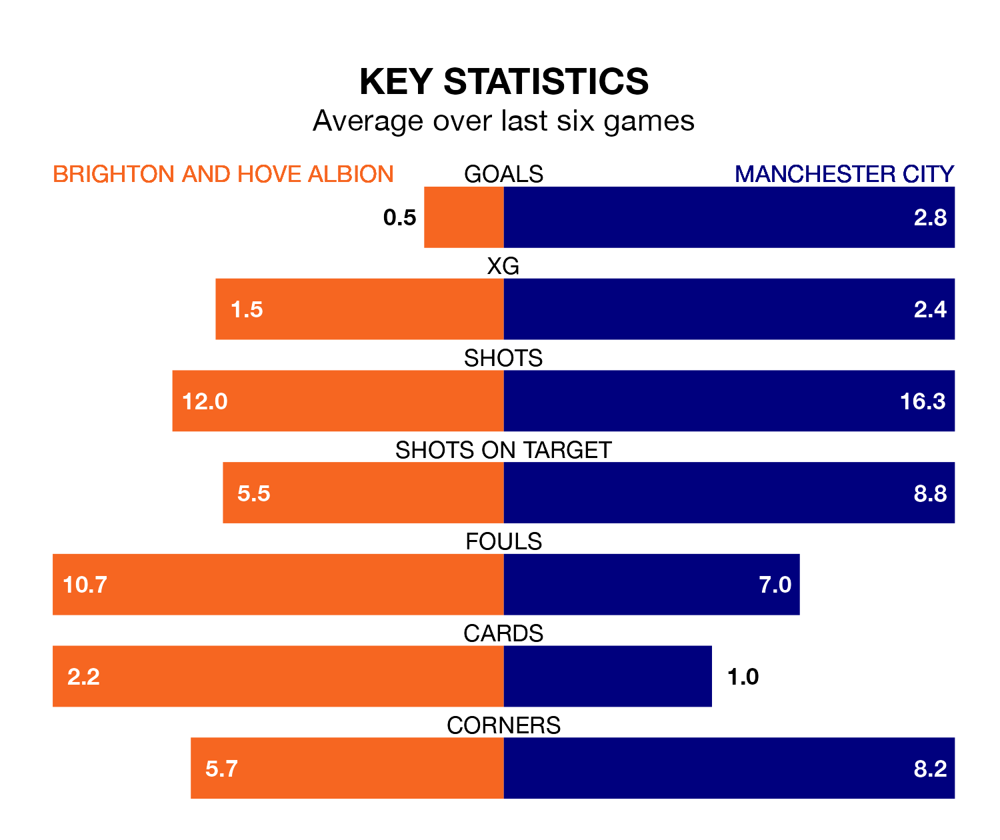

Manchester City are strong favourites to take all three points despite Brighton and Hove Albion's home advantage in Thursday's late match at the American Express Community Stadium.
*Betting Company* are offering odds of 1.44 on City sealing the win, with the visitors sitting first in the Premier League table.
Brighton, who are 10th in the league and 29 points behind the Citizens, are priced at 6 to win. A draw is set at 4.75.
With 76 goals in 32 games so far this season, City are the league's highest scorers with 2.4 goals per game. And they are conceding fewer than average, letting in 32 goals at a rate of 1.0 per game.
Brighton, meanwhile, are average scorers, with 1.6 goals per game. They have also conceded 1.6 goals per game.
In Erling Haaland, the Citizens have the league's most on-form striker so far this season. He has notched 20 goals in 26 appearances.
His goal rate of one every 109 minutes is quicker than that of João Pedro, Albion's top scorer with a goal every 199 minutes, and a total of eight goals in 26 games.
In the last 10 years, Brighton and City have played each other on 14 occasions. Brighton won one of them, City 12, and they drew once.
On average, Brighton scored 0.6 goals and the Citizens 2.6 in those matches.
Their last meeting was on October 21, when City won 2-1 at home.
The home side are in disappointing form in the Premier League, with one win and two draws from their last six games.
With four wins and two draws over that period, the visitors' form is much better – they have taken 14 points from 18, compared to Brighton's five.
Brighton's last match was on April 13, a 1-1 draw against Burnley, with Arijanet Muric getting the goal for Brighton.
City beat Luton Town 5-1 last time out, also on April 13, with Braut Haaland, Daiki Hashioka (own goal), Jeremy Doku, Joško Gvardiol and Mateo Kovačić on the scoresheet.
Updated: 11:31 (UTC), 15/04/24